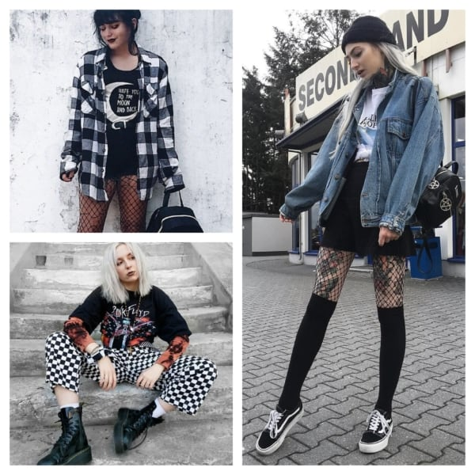

Looks alternativos mais usados em 2022
Você pode encontrar esse estilo de roupas em varias lojas online:
| Marca | Modelo | Preço |
| E-girl store | Modelos gótico e alternativo | Variam em média de R$ 20 a 200 |
| Shein | gringos e alternativos | Variam em média de R$ 20 a 300 |
Se quiser andar estilosa e diferente visite e-girl store e Shein seja um sucesso de mulher